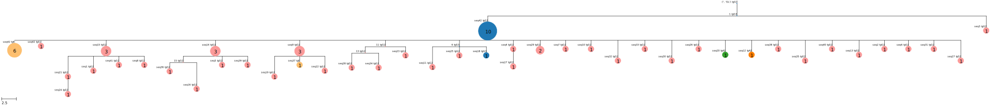

Quickstart
In this minimal example we show how to use gctree commands to rank parsimony trees from PHYLIP’s dnapars program. See the CLI and API docs for complete documentation of command options, included many not used here.
The data in this example were published in Tas et al. 2016. Visualizing Antibody Affinity Maturation in Germinal Centers. Science 351 (6277) and shown in Fig. 4 (lymph node 2, germinal center 1).

Input data
We start with a fasta alignment file.
The file ../example/150228_Clone_3-8.fasta contains heavy chain V gene sequences from
germinal B cells sorted from a brainbow mouse using multicolor fate mapping.
$ tail -30 ../example/150228_Clone_3-8.fasta
>VIBM1S4HBJ
ggacctagcctcgtgaaaccttctcagactctgtccctcacctgttctgtcactggcgac
tccatcaccagtggttactggaactggatccggaagttcccagggaatagacttgagtac
atggggtacataagcttcagtggtagcacttactacaatccatctctcaaaagtcgaatc
tccatcactcgagacacatccaagaaccagtactacctgcagttgaattctgtgactact
gaggacacagccacatattactgt
>VIBM1S4HKJ
ggacctagcctcgtgaaaccttctcagactctgtccctcacctgttctgtcactggcgac
tccatcaccagtggttactggaactggatccggaagttcccagggaatagacttgagtac
atggggtacataagcttcagtggtagcacttactacaatccatctctcaaaagtcgaatc
tccatcactcgagacacatccaagaaccagtactacctgcagttgaattctgtgactact
gaggacacagccacatattactgt
>VIBM1S4HDJ
ggacctagcctcgtgaaaccttctcagactctgtccctcacctgttctgtcactggcgac
tccatcaccagtggttactggaactggatccggaagttcccagggaatagacttgagtac
atggggtacataagcttcagtggtagcacttactacaatccatctctcaaaagtcgaatc
tccatcactcgagacacatccaagaaccagtactacctgcagttgaattctgtgactact
gaggacacagccacatattactgt
>VIBM1S4HCJ
ggacctagcctcgtgaaaccttctcagactctgtccctcacctgttctgtcactggcgac
tccatcaccagtggttactggaactggatccggaagttcccagggaatagacttgagtac
atggggtacataagcttcagtggtagcacttactacaatccatctctcaaaagtcgaatc
tccatcactcgagacacatccaagaaccagtactacctgcagttgaattctgtgactact
gaggacacagccacatattactgt
>GL
ggacctagcctcgtgaaaccttctcagactctgtccctcacctgttctgtcactggcgac
tccatcaccagtggttactggaactggatccggaaattcccagggaataaacttgagtac
atggggtacataagctacagtggtagcacttactacaatccatctctcaaaagtcgaatc
tccatcactcgagacacatccaagaaccagtactacctgcagttgaattctgtgactact
gaggacacagccacatattactgt
In this file the sequence with id GL is the naive germline sequence, and represents the root of the tree.
It does not refer to an observed sequence, but is included to outgroup root the tree!
Generally this input fasta file should also contain all observed sequences with duplication (some of which may be identical to the root/outgroup sequence).
It is also possible to provide some observed sequences with integers ids to be interpreted as abundances, as in the sequence named 17 above.
Deduplication and sequence abundances
First we deduplicate the sequences and convert to phylip alignment format, and also determine sequence abundances.
The deduplicate command writes the phylip alignment of unique sequences to stdout (which we redirect to a file here).
The argument --root indicates the root id.
The flag --id_abundances can be used to indicate that integer sequence ids should be interepreted as abundances.
The argument --abundance_file indicates that sequence abundance information should be written to the specified csv file.
The argument --idmapfile allows us to specify a filename for the output
file containing a mapping of new, unique sequence IDs to original sequence IDs
from the fasta file.
$ deduplicate ../example/150228_Clone_3-8.fasta --root GL --abundance_file abundances.csv --idmapfile idmap.txt > deduplicated.phylip
We now have files deduplicated.phylip and abundances.csv:
$ head deduplicated.phylip
43 264
GL GGACCTAGCC TCGTGAAACC TTCTCAGACT CTGTCCCTCA CCTGTTCTGT
seq1 GGACCTAGCC TCGTGAAACC TTCTCAGACT CTGTCCCTCA CCTGTTCTGT
seq2 GGACCTAGCC TCGTGAAACC TTCTCAGACT CTGTCCCTCA CCTGTTCTGT
seq3 GGACCTAGCC TCGTGAAACC TTCTCAGACT CTGTCCCTCA CCTGTTCTGT
seq4 GGACCTAGCC TCGTGAAACC TTCTCAGACT CTGTCCCTCA CCTGTTCTGT
seq5 GGACCTAGCC TCGTGAAACC TTCTCAGACT CTGTCCCTCA CCTGTTCTGT
seq6 GGACCTAGCC TCGTGAAACC TTCTCAGACT CTGTCCCTCA CCTGTTCTGT
seq7 GGACCTAGCC TCGTGAAATC TTCTCAGACT CTGTCCCTCA CCTGTTCTGT
seq8 GGACCTAGCC TCGTGAAACC TTCTCAGACT CTGTCCCTCA CCTGTTCTGT
$ head abundances.csv
GL,0
seq1,1
seq2,1
seq3,1
seq4,1
seq5,1
seq6,1
seq7,1
seq8,1
seq9,3
Parsimony trees
We use PHYLIP’s dnapars program (see install docs page) to generate a set of maximum parsimony trees for the deduplicated sequences.
PHYLIP is an interactive command line tool, so we will automatically generate a config file to feed it input, instead of using it interactively.
We generate a config file for dnapars based on our deduplicated alignment using the mkconfig command.
$ mkconfig deduplicated.phylip dnapars > dnapars.cfg
Run dnapars using this config file, redirecting stdout to a log file.
$ dnapars < dnapars.cfg > dnapars.log
...
You now have two new files, outfile and outtree.
Note: if you want to rerun the above dnapars command, you must delete these two files first!
gctree
We’re now ready to run gctree infer to use abundance data (in abundances.csv) to rank the equally parsimonious trees (in outfile).
We can use the optional argument --frame to indicate the coding frame of the sequence start, so that amino acid substitutions can be annotated on our trees.
If working in a headless environment, gctree infer must be run with a tool
like xvfb-run to provide an X server for rendering the output trees.
$ gctree infer outfile abundances.csv --root GL --frame 1 --verbose | tee gctree.inference.log
number of trees with integer branch lengths: 703
number of unique collapsed topologies, ignoring inferred ancestral sequences: 679
params: (0.4961832069242958, 0.36445206621349757)
stats for optimal trees:
alleles logLikelihood isotype_parsimony mutability_parsimony
48 -78.00393661325725 0 0
Degenerate ranking criteria: trimmed history DAG contains 3 unique trees, with 3 unique collapsed topologies.
A representative of each topology will be sampled randomly for rendering.
...
A large number of output files with the basename gctree.out.* are also created.
The SVG image file gctree.out.inference.abundance_rank.svg shows a distribution of genotype abundances in the original data:
The SVG image file gctree.out.inference.likelihood_rank.svg is a rank plot of likelihood over the set of maximum parsimony trees:
Then there are files gctree.out.inference.1.svg and gctree.out.inference.1.nk containing an SVG tree image and newick tree file. If more than one parsimony tree is optimal, then up to ten optimal trees will be sampled randomly, and the corresponding files will be numbered arbitrarily.
For example here is the top ranked tree gctree.out.inference.1.svg:

You will also see Python pickle files gctree.out.inference.[1,2,...].p containing a gctree.CollapsedTree object for each optimal tree, which can be loaded and manipulated via the API (e.g. plotted in various ways using gctree.CollapsedTree.render()).
Criteria other than branching process likelihoods can be used to break ties
between trees. Providing arguments --isotype_mapfile and
--idmapfile will allow trees to be ranked by isotype parsimony. Providing
arguments --mutability and --substitution allows trees to be ranked
according to a context-sensitive mutation model. By default, trees are ranked
lexicographically, first maximizing likelihood, then minimizing isotype
parsimony and mutabilities, if such information is provided.
Ranking priorities can be adjusted using the argument --priority_weights.
All parsimony trees found by dnapars, as well as branching process parameters
are saved in the file gctree.out.serialized_dag.p. This file may be
manipulated using gctree infer. For example, to find the optimal tree
according to a linear combination of likelihood, isotype parsimony,
mutabilities, and alleles:
$ gctree infer gctree.out.serialized_dag.p --frame 1 --idmap idmap.txt --isotype_mapfile ../example/isotypemap.txt --mutability ../S5F/Mutability.csv --substitution ../S5F/Substitution.csv --priority_weights 2 2 1 0 --tree_only --outbase newranking --verbose
Skipping parameter fitting, loading provided history DAG
Isotype parsimony will be used as a ranking criterion
Mutation model parsimony will be used as a ranking criterion
params: (0.4961832069242958, 0.36445206621349757)
stats for optimal trees:
alleles logLikelihood isotype_parsimony mutability_parsimony treescore
50 -84.18310979882017 25.0 65.37094021694551 1.7907416516380583
All inference output is written unless we include the argument --tree_only, in which case only files related to the optimal trees are written. The argument --outbase optionally specifies how the new output files should be named.
{kind=link}
isotype
If we would like to add observed isotype data to trees output by gctree
inference, we can now do so.
In addition to the outputs from gctree, a file mapping original IDs of observed
sequences to their observed isotypes (like example/isotypemap.txt) is required.
$ isotype gctree.out.inference.parsimony_forest.p gctree.inference.log idmap.txt ../example/isotypemap.txt --out_directory isotyped
Parameters: (0.4961832069242958, 0.36445206621349757)
index ll original node count isotype parsimony new node count
1 -78.00393661325725 48 28.0 50
2 -78.00393661325725 48 28.0 50
3 -78.00393661325725 48 28.0 50
...
Trees originally output by gctree are re-rendered with revised labels and node colors corresponding to observed or inferred isotypes. For example, here is the top ranked tree above, with isotypes added:
{kind=link}